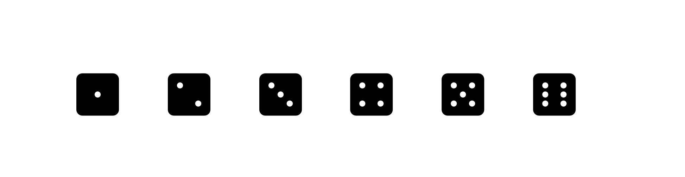
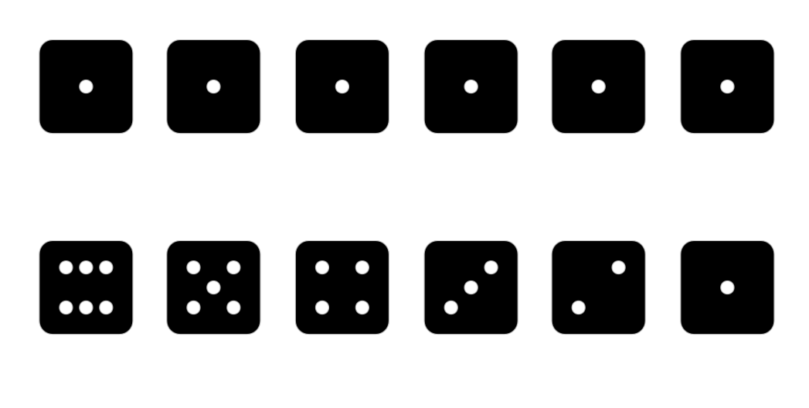

flip_coin <- function(){
coin <- c("H", "T")
sample(coin, size = 2, replace = T)
}9 Probability: Quantifying uncertainty and variabilility
If you chose to study statistics and data analysis it comes natural at some stage, to also study probability. We already encountered some probability ideas in this course, although we did not treat them in any depth.
The first encounter was in unit 3 where we discussed the idea of random sampling from a population and learned how the simple fact that every individual or unit in the population has the same chance of ending up in the sample, if repeated long enough under similar conditions, such a sampling process leads to a good approximation of the variability in the population through the variability in the sample. The sample, in a way, gets a very similar shape. Moreover, in the last unit, unit 5, by studying the bootstrap, we learned about the idea of quantifying how much variation in a summary statistics or in a prediction we would expect if we repeated the sampling many times and use the variability in the samples to express our uncertainty about the underlying characteristics in the population.
With this we also reached a threshold after which the serious encounter with the basic ideas of probability can not anymore be avoided. So let’s face them right on. Many courses in statistics traditionally start with probability from the beginning. We chose a different route here, following the insights of the great statistician Spiegelhalter (2019) whose route of exposition of the subject we follow in our course.
Overview
Keywords
Probability is first of all a mathematical theory. It gets practical value and intuitive meaning in connection with real or conceptual experiments. Indeed these fascinating interconnections are already visible in the very beginning of probability, which emerged in the 16th and 17th century in Europe in the context of practical as well as scholarly discussions about gambling. These discussions engaged the greatest minds of their times, with names like Gerolamo Cardano (1501-1576), Galileo Galilei (1564 - 1642), Blaise Pascal (1623-1662), Pierre Fermat (1601 - 1665), Christiaan Huyghens (1629 - 1695), Jacob Bernoulli (1654 - 1705), Abraham de Moivre (1667 - 1754), Thomas Bayes (1701 - 1761) and Pierre Simon de Laplace (1749 - 1825).
While people were aware of chance at all times, liked to gamble or even had a godess of chance like the Greeks it seems only later it occurred to them that something as elusive as uncertainty or chance could perhaps be measured. This is the starting point for classical probability.
While probability is of immense practical value for dealing with uncertainty, many people, perhaps you are one of them, find probability unintuitive and difficult. Don’t despair. This is very natural, since the human mind is not geard towards probabilistic thinking. Probability is indeed not something that comes to us naturally. It is a way of thinking that has to be learned and acquired through practice and training. With patience and enduracne you alos will master the basic rules of probability.
9.1 What are the chances?
We talk loosely about chance all of the time. This is ok and it does no harm but for doing statistics and engaging in the science of quantifying uncertainty we need to give the term chance a definite and clear interpretation. This turns out to be hard. All the great minds referred to above, had struggeled with this task.
As ab intuitive guide, you might follow the idea to think of probability in terms of expected frequency. You ask yourself, what would happen, if I repeated this experiment a number of times. So for the purpose of this exposition let us think of chance in the following way:
Chance
The chance of something gives the percentage of time it is expected to happen, when the basic process is done over and over again, independently and under the same conditions.
Especially with the modern tool of the computer, we have a wonderful mechanism to experiment with such thoughts at very low cost. Let’s begin with a toy probability example: If you throw a coin twice, what would be the chance or probability of getting two heads?
Let’s use R to think about this along the lines of the definition I had suggested before. If we toss a coin it can either come up heads or tails and we toss it twice. We can write a function that does that.
The function first creates a coin by a vector of characters - heads H and tails T. Then the random flip is modeled as a sample of size two from the coin. sample() will work like a random draw from c("H", "T"). Because the same coin is flipped twice it needs to be a draw with replacement.
To implement the expected frequency idea we now have to toss the coin many times, let’s say 10.000 times for the sake of this argument.
Here we can draw upon our iteration skills. We draw 10000 times and store each draw in an element of a list. This gives us 10000 pairs of either HH, HT, TH or TT. We store these results in a preallocated vector outcome.
outcome <- vector("list", 10000)
for(i in seq_along(1:10000)){
outcome[[i]] <- flip_coin()
}Now we have to count the list elements with two heads. One way to do this is:
counts <- vector("numeric", 10000)
for(i in seq_along(outcome)){
counts[[i]] <- (sum(outcome[[i]]== c("H", "H")) == 2)
}
sum(counts)/10000[1] 0.2501We make 10000 counts. For each element i we make a logical test by asking R whether outcome == c("H", "H") to which R answers, depending what is in the component c(TRUE, TRUE) or c(TRUE, FALSE) or c(FALSE, TRUE) or c(FALSE, FALSE). We can use R coercion rules to do sums of these elements and the sum will be 2 only if the outcome is c(TRUE, TRUE). So we have 10.000 numbers which are 1 if there were 2 heads, in the case of which (sum(outcome[[i]]== c("H", "H")) == 2) returns TRUE and 0 otherwise. The sum of these is the number of heads. The relative frequency is 0.25 or 1/4, which is similar to the theoretical probability.
With this intuition of the correspondence between probability and the relative frequency of an event identically repeated many times, we can pin down some basic properties of probability.
Probability rule 1
The chance of an event is always a number between 0 and 1.
Here is another basic property of chances. We just saw in the coin tossing example that the probability that two heads occur in a flip is 1/4. Since the probability of at least 1 tail is the probability of not heads twice, this leads to the complement rule
Probability rule 2: Complement rule
The probability of soemthing equals 1 minus the probability of the opposite thing.
In the coin tossing example the probability of not having two heads is the same as the probability of at least having one tail and this is equal to \(1 - \frac{1}{4} = \frac{3}{4}\).
9.2 Conditional probability: When probabilities depend on other events.
Here is an example from the book of the book of David Spiegelhalter (see Spiegelhalter (2019), p 214): When screening for breast cancer, mammography is roughly 90% accurate. This means that 90% of women with cancer will be correctly detected and correctly classified. Suppose now that 1 % of women being screened actually have cancer: What is the probability that a randomly chosen woman will have a positive mammogram, and if she does, what is the chance that she really has cancer? From a probability viewpoint, this example is different from the example of tossing a coin twice. In this example, the probability of showing heads is always the same no matter whether heads shows at the first or at the second flip.
Let’s think about the breast cance screening again in terms of expected frequencies. A tree diagram symbolizing the expected frequencies might be helpful to digest this reasoning better:

Say we have 1000 women. Out of these 1000 1 % actually has in fact breast cancer. This is 10 women out of 1000. Of these 10, 90 % have a positive result. This amounts to 9 women. But out of the 990 women without cancer, the complemntary 10 %, i.e. 99 women are falsely given a positive mammography result.
Together these are \(9 + 99 = 108\) positive mammograms, and so the probability that a randomly chosen women will get a positive result is 108/1000 or about 11%. But of these 108 only 9 do in fact have cancer. And so there is only a 9/108 or 8% porbability that the women actually have cancer.
Now some of you might realize, what I meant before when I said that probability is often not intuitive. Despite the 90 % accuracy of the scan, the vast majority of women with a positive mammography do not have cancer. This is, because we tend to confuse the conditional probability of a positive test, given cancer with the conditional probability of cancer given a positive test.
9.3 The multiplication rule
Let us think how we can figure out the chance that two events happen in terms of probability. Here is an example, we can try in R.
Assume there is a box with three tickets, colored red, white and blue.
box <- c("R", "W", "B")Now two tickets are drawn at random without replacement. What is the chance of drawing the red and then the white ticket?
Imagine a huge crowd each draws two tickets. Say we have 1000 people. Write a drawing function:
draw <- function(){
sample(box, 2, replace = F)
}Note that this time we have set the replace argument to false, because we draw at random without replacement. Let’s check the frequency of people holding R, W tickets. Let’s simulate using the ideas from before:
Code
n <- 10^5
outcome <- vector("list", n)
for(i in seq_along(1:n)){
outcome[[i]] <- draw()
}
counts <- vector("numeric", n)
for(i in seq_along(outcome)){
counts[[i]] <- (sum(outcome[[i]]== c("R", "W")) == 2)
}
sum(counts)/n[1] 0.16712This amounts to about 1 in six. How does this come about?
Im the first draw about 1/3 will end up with a red ticket. The others will have either a white or a blue. Of this 1/3 half of the people will get a white ticket, i.e. 1/2 of 1/3 or: $* = . So with our simulated crowd of \(10^5\) or 100.000 people 16667 will have a R and a W ticket.
This leads us to the next important rule of probability:
Probability rule 3: Multipliction rule
The chance that two things will both occur equals the chance that the first will happen multiplied by the chance that the second will happen given the first has happened.
9.4 Independence
This discussion of the multiplication rule immediately leads to the idea of independence, an idea used very often in statistical data analysis and modelling.
Probability rule 4: Independence
Two events are independent if the chances or the second given the first are the same no matter how the first one turns out. Otherwise two things are dependent.
In the coin tossing example we had a situation of independence. Why? Because when we flip the coin once, the chance that it turns up heads is 1/2. If it comes up heads and we flip it again the chance is 1/2 that it turns up heads. If it comes up tails the chance that it turns up heads on the second flip is still 1/2. So no matter what happened in the first coin flip the chances for the outcome of the second coin flip are unchanged.
Thus when we draw at random with replacements we get independent draws, when we draw at random without replacement we get dependent draws..
Probability rule 5: Multiplication rule for independent events
If two events are independent, the chance that both will happen equals the product of their unconditional probabilities. This is a special case of the multiplication rule.
9.5 Listing events
When trying to figure out chances, it is often helpful to list all possible ways a chance process can turn out. For example, imagine a simple game of chance where we throw two six sided dice What is the chance that both dice will show a six?

First of all think about how many ways the first die can fall? These are six ways.
 When the first die shows 1 there is still 6 possible ways ow the second die can fall:
 If we list all the ways the combinations of the two dies can turn out we get the following figure
 These are 36 combinations. There is only one in which both dies show a six. Thus the chance of showing two six is 1/36.
These are 36 combinations. There is only one in which both dies show a six. Thus the chance of showing two six is 1/36.
Note that this fact could also have been worked out by the multiplication rule. Since the tosses of the dice are independent and the chance of getting a six must be \(\frac{1}{6}\) by the multiplication rule the chance that both show six is \(\frac{1}{6} \times \frac{1}{6} = \frac{1}{36}\)
You could ask other questions. If we throw the pair of dice, what is the chance that we get a spot sum of four? From the figure of all combinations, you can see that this must be 3 in 36 or 1/12.
9.6 The addition rule
In this section we discuss the chance that at least one of two things will happen: Either the first happens, or the second or both. The possibility that both can happen requires some cair in accounting for the chances.
If the possibility that both happen can be ruled out we speak of the things as beeing mutually exclusive.
:: {.callout-important appearance=“simple”}
9.7 Mutually exclusive
Two things are mutually exclusive when the occurence of one prevents the occurence of the other: one excludes the other. :::
With this notion we can state another
Probability rule 6: Addition rule
To find the chance that at least one of two things will happen check to see if they are mutually exclusive. If they are the chances can be added up
For example in the case of tossing a coin twice the chance to see at least one head is \(\frac{3}{4}\) because it comprises two heads or head and tail or tail and head. Clearly the three cases are mutually exclusive.
If you want to find the chance that at least one event occurs and the events are not mutually exclusive do not add the chances. The sum will be too big, because the same events will be accounted for twice. With mutually exclusive events, no double counting can occur.